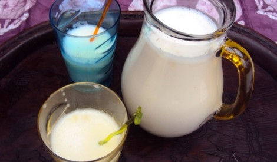

| |
|
 |
Je vous avais déjà fait un article descriptif du bouye (aussi appelé pain de singe).
Ce qu’il faut retenir c’est que le bouye ou pain de singe est le fruit du baobab,
un arbre qui peut vivre des siècles, très répandu au Sénégal, dont il est l’un des emblèmes (avec le lion).
Le fruit se présente sous la forme d’une coque avec à l’intérieur des graines recouvertes de pulpe.
La poudre de bouye est obtenue en séchant les graines puis en récupérant la pulpe. Cette poudre est utilisée pour faire des boissons,
(du jus de bouye par exemple) ou des plats consistants tels que le ngalakh ou le lakh nauteri.
Pour faire ces plats, on peut utiliser directement les graines de bouye en les laissant tremper quelques heures
dans de l’eau puis en mélangeant pour ensuite récupérer le jus ainsi obtenu à l’aide d’un passoir.
Mais la poudre est plus facile et plus simple à utiliser.
Ingrédients et dosage :
Pour un peu moins d’un litre de jus de bouye environ :
100g de poudre de bouye bio Baomix, 50g de sucre, 25cl de lait concentré non sucré,
2 sachets de sucre vanillé, 1 cuillère à soupe de fleur d’oranger (pour parfumer la boisson).
J’ai donné la quantité de sucre à titre indicatif mais c’est vraiment à doser selon vos envies.
Préparation du jus :
Dans un grand bol, mettre la poudre de bouye, le sucre, le sucre vanillé, le lait, ainsi que 25cl d’eau. Mélanger.
Le mélange étant encore un peu consistant, rajouter 10cl d’eau pour délayer un peu. Mélanger à nouveau.
Ajouter une cuillère à soupe de fleur d’oranger.
Ajouter une cuillère à soupe de fleur d’oranger.
Goûter et rajouter de l’eau ou encore du lait concentré si vous le souhaiter.
Laisser refroidir 2 bonnes heures. La poudre de bouye étant très sèche,
la boisson est meilleure quand on laisse le bouye détremper longtemps dans de l’eau.
Les produits m’ont été livrés avec un petit mixeur accompagné de son support,
je l’ai donc utilisé (c’est le petit mixeur vert que vous voyez sur les photos).
Pour de grandes quantités de boisson comme c’est le cas ici, il faut mélanger avec ce mixeur d’abord
à la surface puis le plonger petit à petit vers le fond du récipient. Une cuillère fait bien l’affaire
aussi mais avec le risque d’avoir de petits grumeaux. Dans ce cas, il faut utiliser un passoir à la fin
de la recette pour filtrer le jus, et ce sera parfait 😎
Après l’effort……la dégustation 🙂
C’est bon, on sent bien le goût du bouye. Même mon bébé (qui a un peu moins de deux ans) a bien aimé.
C’est pur surtout. ZÉRO impureté. On ose servir ça à ses invités !